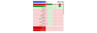
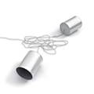
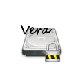
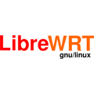

Siete sorvegliati. Organizzazioni private e lo stato monitorano e registrano la vostra attività in rete. privacytools.io vi mette a disposizione la conoscenza e gli strumenti per tutelare la vostra privacy contro la sorveglianza di massa globale.
Lingua: English 繁體中文 Español Deutsch
Privacy? Io non ho nulla da nascondere.
Durante gli ultimi 16 mesi, mentre parlavo di questo argomento in giro per il mondo, ogni volta qualcuno mi diceva: "L'invasione alla privacy non mi preoccupa più di tanto perché non ho nulla da nascondere." Dico loro sempre la stessa cosa. Prendo una penna, scrivo il mio indirizzo email. Dico: "Questo è il mio indirizzo email. Quando tornerete a casa voglio che mi inviate tutte le password delle vostre email, non solo quelle di lavoro, ma di tutte, perché vorrei semplicemente trollare su quello che state facendo in rete, leggere quello che voglio e pubblicare ciò che trovo interessante. Dopo tutto, se non siete malintenzionati, se non state facendo nulla di sbagliato, non dovreste avere nulla da nascondere." Non una singola persona ha accettato la mia offerta.
Leggi anche:
- Non ho niente da nascondere (argomento) (Wikipedia - In inglese)
- Come rispondi alla frase "Io non ho nulla da nascondere"? (reddit.com - In inglese)

L'Accordo UKUSA è un accordo tra il Regno Unito, Stati Uniti d'America, Australia, Canada, e Nuova Zelanda per cooperare nella raccolta, analisi e condivisione di dati di intelligence. I membri di questo gruppo, conosciuti come Cinque Occhi, si concentrano nella raccolta ed analisi di dati di intelligence da diverse parti del mondo. Mentre le nazioni che fanno parte dei Cinque Occhi si sono accordate sul non spiarsi a vicenda come avversari, dei leak da Snowden hanno rivelato che i membri dei Cinque Occhi si monitorano a vicenda i cittadini e condividono dati di intelligence per evitare l'infrazione della legge che proibisce loro di spiare i propri cittadini. Questa alleanza collabora anche con gruppi di altre nazioni estranee ai Cinque Occhi con lo scopo di condividere dati di intelligence (formando i Nove Occhi e i Quattordici Occhi), inoltre i Cinque Occhi e le nazioni di terze parti possono e si spiano tra di loro.
Cinque Occhi
2. Canada
3. Nuova Zelanda
4. Regno Unito
5. Stati Uniti d'America
Nove Occhi
7. Francia
8. Paesi Bassi
9. Norvegia
Quattordici Occhi
11. Germania
12. Italia
13. Spagna
14. Svezia
Perché è sconsigliato utilizzare un servizio che si trova in USA?

I servizi che si trovano negli Stati Uniti sono sconsigliati proprio per i programmi di sorveglianza del paese, l'utilizzo delle National Security Letter (NSLs) accompagnati da ordinanze restrittive, le quali vietano al destinatario di parlare della richiesta. Questa combinazione permette al Governo di obbligare segretamente le aziende a fornire accesso completo ai dati dei propri clienti e trasformare il servizio offerto in uno strumento di sorveglianza di massa.
Ne è un esempio Lavabit – un servizio di posta elettronica sicuro ora in disuso creato da Ladar Levison. L'FBI ha richiesto tutti i dati di Snowden dopo aver scoperto che utilizzò il servizio. Dal momento che Lavabit non teneva alcun log ed il contenuto delle email era criptato, l'FBI ha presentato un mandato di comparizione (con un'ordinanza restrittiva) per le chiavi private SSL del servizio. Ottenere le chiavi private SSL avrebbe permesso loro di di accedere alle comunicazioni (sia metadati che i contenuti non cifrati) in tempo reale per tutti i clienti di Lavabit, non solo di Snowden.
In conclusione, Levison consegnò le chiavi private SSL e, allo stesso tempo, chiudette il servizio. Il Governo USA minacciò di arrestare Levison, affermando che chiudendo il servizio fosse in violazione con l'ordinanza del tribunale.
Informazioni correlate
- Evitate tutti i servizi che si trovano in USA e UK (In inglese)
- La prova che i Warrant Canary funzionano seguendo l'esempio di Surespot (In inglese)
- https://it.wikipedia.org/wiki/Accordo_UKUSA
- http://en.wikipedia.org/wiki/Lavabit#Suspension_and_gag_order (In inglese)
- https://en.wikipedia.org/wiki/Key_disclosure_law (In inglese)
- http://en.wikipedia.org/wiki/Portal:Mass_surveillance (In inglese)
| Classifica ordinabile dei servizi VPN | Prezzo Annuale | Periodo di prova | Num. Server | Giurisdizione | Sito web |
|---|---|---|---|---|---|
 |
54 € | Sì | 162 | Italia | AirVPN.org |

|
45 € | Sì | 5 | Svezia | AzireVPN.com |
| 99 € | Sì | 27 | Hong Kong | blackVPN.com | |

|
$ 52 | Sì | 18 | Islanda | Cryptostorm.is |

|
39,99 € | No | 432 | Cipro del Nord | EarthVPN.com |

|
$ 99.95 | Sì | 145 | Isole Vergini Britanniche | ExpressVPN.com |

|
$ 35.88 | No | 27 | Svezia | FrootVPN.com |

|
$ 65.04 | Sì | 88 | Malesia | hide.me |

|
$ 100 | Sì | 21 | Gibilterra | IVPN.net |

|
60 € | Sì | 52 | Svezia | Mullvad.net |

|
$ 69 | Sì | 475 | Panama | NordVPN.com |

|
$ 84 | Sì | 39 | Svezia | OVPN.com |
| 124.95 € | No | 41 | Panama | Perfect-Privacy.com | |

|
Gratuito | Sì | 112 | Svizzera | ProtonVPN.com |

|
$ 90 | No | 300 | Seychelles | Proxy.sh |
| $ 39.95 | Sì | 48 | Seychelles | Trust.Zone | |

|
$ 39.99 | No | 122 | Hong Kong | VPN.ht |
| $ 35.88 | No | 80 | Seychelles | VPNTunnel.com |
I nostri criteri per i servizi VPN
- Operare al di fuori degli USA od altre nazioni facenti parte dei Cinque Occhi.
Altro: Evitate tutti i servizi che si trovano in USA e UK (In inglese). - Supporto software ad OpenVPN.
- Accetta Bitcoin, contanti, carte di debito o bancomat come metodi di pagamento.
- Nessuna informazione personale richiesta al momento della sottoscrizione. Solamente un nome utente, una password e una Email.
Non siamo affiliati con nessun servizio sopra elencato. Questo dovrebbe fornirvi dei consigli onesti.
Altri servizi VPN
Foglio di calcolo con informazioni imparziali e dati facilmente verificabili su oltre 100 servizi VPN. (Discutine su Reddit - In inglese)
Informazioni correlate sulle VPN
- Quali servizi VPN ti rendono anonimo nel 2017? (In inglese)
(Nota: I servizi elencati per primi nell'articolo di TorrentFreaks sono sponsorizzati) - Come rendere le VPN ancora più sicure (In inglese)
- Ti puoi fidare di una VPN per proteggere la tua privacy? - SpiderOak (In inglese)
- Attenti alle recensioni false - Il marketing dietro le VPN ed i programmi di affiliazione (In inglese)
- Utilizzando una VPN sono anonimo - 7 miti sfatati (In inglese)
(Nota: Anche se è un'ottima lettura, stanno utilizzando l'articolo per farsi pubblicità) - Il servizio VPN Proxy.sh ha intercettato il traffico per catturare un hacker (In inglese)
- Policy Etica - Ecco le ragioni per le quali Proxy.sh potrebbe tenere traccia del traffico (In inglese)
- IVPN.net raccoglie il tuo indirizzo email e l'indirizzo IP al momento della sottoscrizione (In inglese)
Leggi la dichiarazione di IVPN sull'email. - blackVPN ha annunciato che i log vengono eliminati dopo la disconnessione (In inglese)
- Non utilizzate LT2P IPSec, utilizzate altri protocolli (In inglese)

Un "warrant canary" è un documento che dichiara che un'organizzazione non ha ricevuto alcun mandato di comparizione segreto in uno specifico lasso di tempo. Se questo documento non viene aggiornato in quel periodo di tempo allora l'utente può presumere che il servizio abbia ricevuto il mandato di comparizione citato poc'anzi e dovrebbe smettere di utilizzare il servizio.
Esempi di "Warrant Canary":
- https://proxy.sh/canary
- https://www.ivpn.net/resources/canary.txt
- https://www.vpnsecure.me/files/canary.txt
- https://www.bolehvpn.net/canary.txt
- https://lokun.is/canary.txt
- https://www.ipredator.se/static/downloads/canary.txt
Informazioni correlate sui "Warrant Canary"
- Domande Frequenti sui "Warrant Canary" (In inglese)
- Compagnie ed Aziente con dei "warrant canaries" (In inglese)
- Osservazioni sui "Warrant canary" a cura di Bruce Schneier ed un esempio sulle leggi contro i "warrant canary".
Mozilla Firefox
Firefox è veloce, affidabile, open source e rispetta la privacy. Non dimenticate di modificare alcune impostazioni secondo i nostri consigli: WebRTC e about:config oltre ad aggiungere estensioni attente alla privacy.
SO: Windows, Mac, Linux, Android, BSD.

Quando visiti una pagina web, il tuo browser invia di proposito le informazioni sulla tua configurazione, come ad esempio i font disponibili, il tipo di browser e le estensioni. Se questa combinazione di informazioni è univoca, potrebbe essere possibile identificarti e tracciarti senza l'ausilio dei cookie. EFF ha creato uno strumento chiamato Panopticlick per testare il tuo browser per capire quanto sia unico.
Devi guardare cosa stanno segnalando la maggior parte dei browser, quindi utilizzare quelle variabili per riportare il tuo browser all'interno di quella popolazione. Ciò significa avere gli stessi font, plugin ed estensioni installate della maggior parte degli utenti. Dovresti avere una stringa che falsa l'user agent per farlo combaciare con ciò che utilizza la maggior parte degli utenti. Devi avere le stesse impostazioni abilitate e disabilitate, come ad esempio DNT e WebGL. Devi far apparire il tuo browser il più comune possibile. Disabilitare JavaScript, usare Linux, o anche TBB, distinguerà il tuo browser dalla massa.
I browser moderni non sono progettati per proteggere la privacy degli utenti in rete. Piuttosto che preoccuparsi di essere univoci, sarebbe più pratico utilizzare delle estensioni gratuite come Privacy Badger, uBlock Origin e Disconnect. Non solo rispettano la tua libertà, ma anche la privacy. Farai più strada con queste piuttosto che provare a manipolare l'impronta digitale del tuo browser.
Informazioni correlate
- Quanto è univoco il tuo browser? Peter Eckersley, EFF. (In inglese)
- Discuti dell'argomento "fingerprinting" con noi su reddit.com (In inglese)
- La nostra sezione dedicata alle estensioni attente alla privacy per Firefox
- BrowserLeaks.com - Strumenti per testare la sicurezza del browser, che ti diranno con precisione quali informazioni personali potrebbero essere rivelate senza alcun consenso quando navighi in Internet (In inglese)
Anche se software come NoScript lo impediscono, è sicuramente una buona idea bloccare il protocollo in modo diretto, per essere sicuri.
Come disabilito WebRTC in Firefox?
In breve: Imposta il valore "media.peerconnection.enabled" su "false" in "about:config".
Spiegazione:
- Scrivi "about:config" nella barra degli indirizzi di Firefox e premi invio.
- Premi il bottone "Farò attenzione, prometto!"
- Cerca "media.peerconnection.enabled"
- Fai doppio click sulla voce, la colonna "Valore" adesso dovrebbe mostrare "false"
- Fatto. Rifai il test del Leak WebRTC.
Se vuoi assicurarti che ogni singola impostazione di WebRTC sia veramente disabilitata cambia le seguenti impostazioni:
- media.peerconnection.turn.disable = true
- media.peerconnection.use_document_iceservers = false
- media.peerconnection.video.enabled = false
- media.peerconnection.identity.timeout = 1
Adesso WebRTC è disabilitato al 100%.
Come risolvo il Leak WebRTC in Google Chrome?
WebRTC non può essere disabilitato del tutto in Chrome, ma è comunque possibile reindirizzare le richieste (ed impedire i leak) utilizzando un estensione. Due soluzioni open source includono WebRTC Leak Prevent (a seconda della situazione alcune opzioni andrebbero modificate), e uBlock Origin (seleziona "Impedisci a WebRTC di rivelare l'indirizzo IP locale" nelle Impostazioni).
E per gli altri browser?
Chrome su iOS, Internet Explorer e Safari non hanno ancora implementato WebRTC. Ma consigliamo di utilizzare Firefox su tutti i dispositivi.
Impedisci il tracciamento con "Privacy Badger"

Privacy Badger è un'estensione che impedisce agli inserzionisti ed ai tracker di terze parti di tracciare segretamente qualsiasi pagina web tu visiti in rete. Privacy Badger impara dai tracker mentre navighi analizzando le richieste alle risorse esterne dei siti web. Presta attenzione perché Google Analytics non è considerato un tracker di terze parti da Privacy Badger, ciò significa che non verrà bloccato non se non utilizzi un altro blocker, come uBlock Origin. https://www.eff.org/privacybadger/
Blocca Pubblicità e Tracker con "uBlock Origin"

Un efficente blocker ad ampio spettro che nonostante il poco utilizzo di memoria, è in grado di caricare e forzare migliaia di altri filtri rispetto ad altri popolari blocker in giro. Non c'è alcuna strategia di monetizzazione dietro ed
è completamente open source. Consigliamo Firefox ma uBlock Origin funziona anche in altri browser come Safari, Opera, e Chromium. uBlock, al contrario di AdBlock Plus, non permette le cosìddette "pubblicità accettabili".
https://addons.mozilla.org/firefox/addon/ublock-origin/
Elimina automaticamente i Cookie con "Cookie AutoDelete"
Rimuove automaticamente i cookie quando non sono più utilizzati dalle schede aperte nel browser. Con i cookie, le sessioni persistenti, così come le informazioni utilizzate per spiarti, verranno eliminate.
https://addons.mozilla.org/firefox/addon/cookie-autodelete/
Cifratura con "HTTPS Everywhere"
Un'estensione per Firefox, Chrome, e Opera che cifra le connessioni con la maggior parte dei siti web, rendendo la navigazione ancora più sicura. Una collaborazione tra The Tor Project e la Electronic Frontier Foundation.
https://www.eff.org/https-everywhere
Blocca le Reti per la Consegna dei Contenuti (CDN) con "Decentraleyes"

Emula le Reti per la Consegna di Contenuti in locale intercettando le richieste, trovando la risorsa richiesta ed iniettandola nell'ambiente. Tutto questo succede in modo istantaneo, automatico, e non richiede alcuna configurazone prima dell'utilizzo. Codice sorgente: GitHub.
https://addons.mozilla.org/firefox/addon/decentraleyes/
Ferma le richieste tra siti web (cross-site) con "uMatrix"
Molti siti web integrano delle funzioni che permettono ad altri siti web di tracciarti, come i pulsanti "Mi Piace" di Facebook o Google Analytics. uMatrix ti permette di assumere il controllo su queste richieste tra siti web. Questo ti permette un maggiore e migliore controllo
sulle informazioni che riveli online.
https://addons.mozilla.org/firefox/addon/umatrix/
Assumi il controllo completo con "NoScript Security Suite"

Estensione completamente personalizzabile che ti permette di attivare selettivamente Javascript, Java, e Flash solamente nei siti di cui ti fidi. Sconsigliata agli utenti comuni, richiede delle conoscenze tecniche per essere configurata.
https://addons.mozilla.org/firefox/addon/noscript/
Preparativi:
- Scrivi "about:config" nella barra degli indirizzi di Firefox e premi invio.
- Premi il bottone "Farò attenzione, prometto!"
- Segui le istruzioni qui sotto...
Come iniziare:
- privacy.firstparty.isolate = true
- Il risultato degli sforzi di Tor Uplift, questa opzione isola tutte ciò che potrebbe identificare il browser (e.g. cookies) nel dominio che si sta visitando, con lo scopo di prevenire il tracciamento in altri domini.
- privacy.resistFingerprinting = true
- Il risultato degli sforzi di Tor Uplift, questa opzione rende Firefox ancora più resistente al "fingerprinting".
- privacy.trackingprotection.enabled = true
- Questa è la nuova protezione di Mozilla contro il tracciamento. Utilizza la lista dei filtri di Disconnect.me, che è ridondante se stai già utilizzando i filtri di terze parti di uBlock Origin, di conseguenza dovresti impostarla su false se è questo il caso.
- browser.cache.offline.enable = false
- Disabilita la cache offline.
- browser.safebrowsing.malware.enabled = false
- Disabilita la scansione per i malware di Google Safe Browsing. Un rischio per la sicurezza, ma migliora la privacy.
- browser.safebrowsing.phishing.enabled = false
- Disabilita Google Safe Browsing e la protezione da phishing. Un rischio per la sicurezza, ma migliora la privacy.
- browser.send_pings = false
- Se l'attributo è impostato su true, permette ai siti web di tracciare i click dei visitatori.
- browser.sessionstore.max_tabs_undo = 0
- Le schede chiuse di recente rimangono temporaneamente memorizzate nel menu -> Cronologia e -> Schede Chiuse di Recente anche se Firefox è impostato per non memorizzare la cronologia.
- browser.urlbar.speculativeConnect.enabled = false
- Disabilita il pre-caricamento dell'autocompletamento degli URL. Firefox pre-carica gli URL che vengono autocompletati quando un utente digita nella barra degli indirizzi, il che è motivo di preoccupazione se vengono suggeriti URL al quale l'utente non vuole collegarsi. Fonte (In inglese)
- dom.battery.enabled = false
- I proprietari dei siti web possono conoscere lo stato della batteria del tuo dispositivo. Fonte (In inglese)
- dom.event.clipboardevents.enabled = false
- I siti web possono sapere se copi, incolli o tagli qualcosa da una pagina web oltre ad informarli sulla parte interessata. Questa opzione impedisce l'invio di queste notifiche.
- geo.enabled = false
- Disabilita la geolocalizzazione.
- media.navigator.enabled = false
- I siti web possono conoscere lo stato del microfono e della webcam del tuo dispositivo.
- network.cookie.cookieBehavior = 1
- Disabilita i cookie
- 0 = Accetta tutti i cookie per impostazione predefinita
- 1 = Accettali solamente dal sito di origine (blocca i cookie di terze parti)
- 2 = Blocca tutti i cookie per impostazione predefinita
- network.cookie.lifetimePolicy = 2
- I cookie vengono eliminati al termine della sessione
- 0 = Accetta normalmente i cookie
- 1 = Chiedi per tutti i cookie
- 2 = Accettali solo per la sessione in corso
- 3 = Accettali per N giorni
- network.http.referer.trimmingPolicy = 2
- Invia solo lo schema, l'host e la porta nell'header
Referer - 0 = Invia l'URL completo nell'header
Referer - 1 = Invia l'URL senza le sue "query string" nell'header
Referer - 2 = Invia solo lo schema, l'host e la porta nell'header
Referer - network.http.referer.XOriginPolicy = 2
- Invia solo l'header
Refererquando gli hostname combaciano. (Nota: se notate gravi malfunzionamenti, provate1in combinazione con l'impostazioneXOriginTrimmingPolicyqui sotto.) Fonte (In inglese) - 0 = Invia
Refererin tutti i casi - 1 = Invia
Refererai siti con lo stesso eTLD - 2 = Invia
Referersolo quando l'hostname combacia - network.http.referer.XOriginTrimmingPolicy = 2
- Quando si sta inviando
Refererattraverso le origini, trasmetti solo lo schema, l'host e la porta nell'headerRefererdella richiesta d'origine. Fonte (In inglese) - 0 = Invia l'URL completo nel
Referer - 1 = Invia l'URL senza la "query string" nel
Referer - 2 = Invia solo lo schema, l'host e la porta nel
Referer - webgl.disabled = true
- WebGL è un potenziale rischio per la sicurezza. Fonte (In inglese)
Informazioni correlate:
- ffprofile.com - Ti aiuta a creare un profilo di Firefox con i valori predefiniti che preferisci (In inglese)
- mozillazine.org - Preferenze relative alla Sicurezza e alla Privacy (In inglese)
- user.js Firefox hardening stuff - Questo è un file di confgurazione user.js per Mozilla Firefox che dovrebbe rendere le impostazioni di Firefox ancora più restrittive e quindi più sicure (in inglese)
- Privacy Settings - Un'estensione per Firefox che altera in modo semplice le impostazioni della privacy integrate nel browser attraverso una barra degli strumenti.
| Servizio Email | URL | Dal | Ubicazione Server | Spazio di archiviazione | Prezzo / Anno | Bitcoin | Crittografia | Dominio di proprietà |
|---|---|---|---|---|---|---|---|---|

|
|
2013 | Svizzera | 500 MB | Gratuito | Accettati | Integrata | Sì |
|
|
2015 | Paesi Bassi | 4 GB | Gratuito | Accettati | Integrata | No | |

|
|
2011 | Germania | 1 GB | Gratuito | No | Integrata | Sì |

|
|
2013 | Belgio | 500 MB | Gratuito | Accettati | Integrata | Sì |
|
|
2014 | Germania | 2 GB | 12 € | Accettati | Integrata | Sì | |

|
|
2009 | Germania | 2 GB | 12 € | No | Integrata | No |

|
|
1999 | Norvegia | 1 GB | $ 19.95 | No | No | Sì |

|
|
2003 | Svizzera | 1 GB | $ 49.95 | Accettati | Integrata | Sì |

|
|
2014 | Paesi Bassi | 10 GB | $ 59.95 | Accettati | Integrata | Sì |
|
|
2010 | Svizzera | 2 GB | $ 60 | Accettati | No | Sì |
Interessanti servizi email in sviluppo
- Confidant Mail - Un servizio email cifrato, open source e senza SMTP ottimizzato per allegati di grandi dimensioni. È un'alternativa sicura e a prova di spam alle classiche email e servizi di condivisione di file online. Utilizza la crittografia GNU Privacy Guard (GPG) per cifrare l'autenticazione e i contenuti, e TLS 1.2 con chiavi ephemeral per fornire la cifratura.
Diventa tu stesso un servizio di email con Mail-in-a-Box

Sii un passo avanti ed assumi il controllo della tua email con questo server facile da configurare. Mail-in-a-Box ti permette di ospitare il tuo servizio email in pochi e semplici passi. È come se stessi creando la tua Gmail, ma avendone pieno controllo. Tecnicamente, Mail-in-a-Box trasforma un nuovo computer nel cloud in un server email funzionante. Non devi essere un esperto di tecnologia per impostarlo. Scopri di più: https://mailinabox.email/
Strumenti per migliorare la privacy nelle email
- gpg4usb - Un piccolo editor portatile facile da utilizzare per cifrare e decifrare qualsiasi messaggio di testo o file. Per Windows e Linux. Tutorial GPG (In inglese).
- Mailvelope - Un estensione per il browser che permette lo scambio di email seguendo lo standard di cifratura OpenPGP.
- Enigmail - Un'estensione di sicurezza per Thunderbird e Seamonkey. Ti permette di inviare e ricevere email firmate o cifrate con lo standard OpenPGP.
- TorBirdy - Questa estensione configura Thunderbird per la connessione tramite la rete anonima Tor.
- Email Privacy Tester - Questo strumento invia una email al proprio indirizzo ed effettuerà dei test relativi alla privacy.
Informazioni Correlate
- La legge sulla "Privacy" lascia ancora una volta le email nel cloud aperte alle forze dell'ordine (In inglese) - I dati archiviati nel cloud per più di sei mesi sono considerati abbandonati e le agenzie di intelligence possono accedervi senza un mandato. Lezione: Utilizzate un client email esterno come Thunderbird o Enigmail, scaricate le vostre email ed archiviatele in locale. Non lasciatele mai nel server.
- OpenMailBox tiene i log dei meta-dati per un anno - Discussione del forum, risponde l'amministratore del server (In inglese)
- L'FBI sequestra di nuovo i server May First/Riseup (In inglese)
- I server di Autistici/Inventati sono compromessi (In inglese) - I servizi di crittografia offerti dai server di Autistici/Inventati sono stati compromessi il 15 Giugno 2004. La cosa si è scoperta il 21 Giugno 2005. Un anno dopo. Durante un'investigazione in una singola casella postale, la Polizia Postale potrebbe aver spiato le conversazioni private di ogni singolo utente che viaggiavano nei server autistici.org/inventati.org.
 Mozilla Thunderbird è un client email, chat e notizie gratuito, open source, multi-piattaforma sviluppato dalla Mozilla Foundation. Thunderbird è un client email, newsgroup,
notizie e chat (XMPP, IRC, Twitter).
Mozilla Thunderbird è un client email, chat e notizie gratuito, open source, multi-piattaforma sviluppato dalla Mozilla Foundation. Thunderbird è un client email, newsgroup,
notizie e chat (XMPP, IRC, Twitter). Claws Mail è un client email e news gratuito e open source basato su GTK+. Offre una configurazione semplice e caratteristiche in abbondanza. Include Gpg4win,
una suite per la crittografia per Windows.
Claws Mail è un client email e news gratuito e open source basato su GTK+. Offre una configurazione semplice e caratteristiche in abbondanza. Include Gpg4win,
una suite per la crittografia per Windows.Vale la pena menzionare
- K-9 Mail - Un applicazione per le email indipendente per Android. Supporta sia le caselle POP3 che IMAP, ma nel caso di IMAP supporta solo le email push.
- GNU Privacy Guard - Crittografia delle email. GnuPG è un'alternativa sotto licenza GPL alla suite di crittografia PGP. Tutorial (In inglese). Utilizzate GPGTools per Mac OS X.
- Mailpile (Beta) - Un client web-mail moderno e veloce con una crittografia user-friendly e con funzioni per la privacy.
I2P-Bote
 I2P-Bote è un sistema dedicato alle email completamente decentralizzato. Supporta identità differenti e non rivela l'header delle email. Attualmente (2015), si trova ancora
in versione beta e vi si può accedere tramite la sua web-app o tramite IMAP ed SMTP. Tutte le email inviate da Bote sono cifrate in modo trasparente con la crittografia end-to-end e, in modo facoltativo, firmate con la chiave privata del mittente.
I2P-Bote è un sistema dedicato alle email completamente decentralizzato. Supporta identità differenti e non rivela l'header delle email. Attualmente (2015), si trova ancora
in versione beta e vi si può accedere tramite la sua web-app o tramite IMAP ed SMTP. Tutte le email inviate da Bote sono cifrate in modo trasparente con la crittografia end-to-end e, in modo facoltativo, firmate con la chiave privata del mittente.
SO: Windows, Mac, Linux, Android, F-Droid.
Bitmessage
Bitmessage è un protocollo di comunicazione P2P utilizzato per l'invio di messaggi cifrati ad una o più persone. È decentralizzato ed affidabile, ciò significa che non hai bisogno di fidarti di alcun certificato di nessuna entità. Utilizza un'autenticazione solida così il mittente non può essere falsificato, e punta a nascondere dati "senza contenuto".
SO: Windows, Mac, Linux.
searx
 An open source metasearch engine, aggregating the results of other search engines while not storing information about its users. No logs, no ads and no tracking.
An open source metasearch engine, aggregating the results of other search engines while not storing information about its users. No logs, no ads and no tracking.
DuckDuckGo
 The search engine that doesn't track you. Some of DuckDuckGo's code is free software hosted at GitHub, but the core is proprietary. The company is based in the USA.
The search engine that doesn't track you. Some of DuckDuckGo's code is free software hosted at GitHub, but the core is proprietary. The company is based in the USA.
Firefox Addon
- Google search link fix - Firefox extension that prevents Google and Yandex search pages from modifying search result links when you click them. This is useful when copying links but it also helps privacy by preventing the search engines from recording your clicks. (Open Source)
Worth Mentioning
- Qwant - Qwant's philosophy is based on two principles: no user tracking and no filter bubble. Qwant was launched in France in February 2013. Privacy Policy.
- MetaGer - An open source metasearch engine, which is based in Germany. It focuses on protecting the user's privacy.
- ixquick.eu - Returns the top results from multiple search engines. Based in the Netherlands.
Mobile: Signal
 Signal is a mobile app developed by Open Whisper Systems. The app provides instant messaging, as well as voice and video calling.
All communications are end-to-end encrypted. Signal is free and open source, enabling anyone to verify its security by auditing the code. The development team is supported by community donations and grants. There are no advertisements,
and it doesn't cost anything to use.
Signal is a mobile app developed by Open Whisper Systems. The app provides instant messaging, as well as voice and video calling.
All communications are end-to-end encrypted. Signal is free and open source, enabling anyone to verify its security by auditing the code. The development team is supported by community donations and grants. There are no advertisements,
and it doesn't cost anything to use.
OS: Android, iOS, macOS, Windows, Debian-based Linux
Wire
 Wire is an app developed by Wire Swiss GmbH.
The Wire app allows users to exchange end-to-end encrypted instant messages, as well as make voice and video calls. Wire is free and open source, enabling anyone to verify its security by auditing the code.
The development team is backed by Iconical and they will monetize in the future with premium features/services.
Wire is an app developed by Wire Swiss GmbH.
The Wire app allows users to exchange end-to-end encrypted instant messages, as well as make voice and video calls. Wire is free and open source, enabling anyone to verify its security by auditing the code.
The development team is backed by Iconical and they will monetize in the future with premium features/services.
Caution: The company keeps a list of all the users you contact until you delete your account.
OS: Android, iOS, macOS, Windows, Linux, Web
Desktop: Ricochet
Ricochet uses the Tor network to reach your contacts without relying on messaging servers. It creates a hidden service, which is used to rendezvous with your contacts without revealing your location or IP address. Instead of a username, you get a unique address that looks like ricochet:rs7ce36jsj24ogfw. Other Ricochet users can use this address to send a contact request - asking to be added to your contacts list.
OS: Windows, Mac, Linux.
Worth Mentioning
- ChatSecure - ChatSecure is a free and open source messaging app that features OTR encryption over XMPP.
- Cryptocat - Encrypted open source messenger. Supports file sharing and multiple devices. Available for Windows, Linux and Mac.
- Kontalk - A community-driven instant messaging network. Supports end-to-end encryption. Both client-to-server and server-to-server channels are fully encrypted.
- Conversations - An open source Jabber/XMPP client for Android 4.0+ smart phones. Supports end-to-end encryption with either OMEMO, OTR or openPGP.
- List of OTR Clients - Wikipedia
Related Information
- Ricochet, the Messenger That Beats Metadata, Passes Security Audit | Motherboard
- Chatting in Secret While We're All Being Watched - firstlook.org
- Advanced users with special needs can download the Signal APK directly. Most users should not do this under normal circumstances.
- Secure Messaging App Wire Stores Everyone You've Ever Contacted in Plain Text | Motherboard
- Telegram encryption isn't secure.
- Telegram is marketed as a private messenger, but it's not private by default.
Mobile: Signal
Signal is a mobile app developed by Open Whisper Systems. The app provides instant messaging, as well as voice and video calling.
All communications are end-to-end encrypted. Signal is free and open source, enabling anyone to verify its security by auditing the code. The development team is supported by community donations and grants. There are no advertisements,
and it doesn't cost anything to use.
OS: iOS, Android.
Wire
Wire is an app developed by Wire Swiss GmbH.
The Wire app allows users to exchange end-to-end encrypted instant messages, as well as make voice and video calls. Wire is free and open source, enabling anyone to verify its security by auditing the code.
The development team is backed by Iconical and they will monetize in the future with premium features/services.
Caution: The company keeps a list of all the users you contact until you delete your account.
OS: Android, iOS, macOS, Windows, Linux, Web
Worth Mentioning
- Jitsi - Jitsi is a free and open source multiplatform voice (VoIP), videoconferencing and instant messaging application.
- Tox - A free and open-source, peer-to-peer, encrypted instant messaging and video calling software.
- Ring (formerly SFLphone) - Gives you a full control over your communications and an unmatched level of privacy.
Related Information
- Advanced users with special needs can download the Signal APK directly. Most users should not do this under normal circumstances.
- Secure Messaging App Wire Stores Everyone You've Ever Contacted in Plain Text | Motherboard
OnionShare
OnionShare is an open source tool that lets you securely and anonymously share a file of any size. It works by starting a web server, making it accessible as a Tor onion service, and generating an unguessable URL to access and download the files. It doesn't require setting up a server on the internet somewhere or using a third party filesharing service. You host the file on your own computer and use a Tor onion service to make it temporarily accessible over the internet.
OS: Windows, Mac, Linux.
Magic Wormhole
 Get things from one computer to another, safely.
This package provides a library and a command-line tool named wormhole, which makes it possible to get arbitrary-sized files and directories (or short pieces of text) from one computer to another. The two endpoints are identified by using identical "wormhole codes": in general, the sending machine generates and displays the code, which must then be typed into the receiving machine.
The codes are short and human-pronounceable, using a phonetically-distinct wordlist. The receiving side offers tab-completion on the codewords, so usually only a few characters must be typed. Wormhole codes are single-use and do not need to be memorized.
Get things from one computer to another, safely.
This package provides a library and a command-line tool named wormhole, which makes it possible to get arbitrary-sized files and directories (or short pieces of text) from one computer to another. The two endpoints are identified by using identical "wormhole codes": in general, the sending machine generates and displays the code, which must then be typed into the receiving machine.
The codes are short and human-pronounceable, using a phonetically-distinct wordlist. The receiving side offers tab-completion on the codewords, so usually only a few characters must be typed. Wormhole codes are single-use and do not need to be memorized.
OS: cross-platform (python)
Seafile - 100 GB Storage for $10/month
Seafile offers 100 GB Storage for $10/month but also gives you the opportunity to host on your own server. Your data is stored in Germany or with Amazon Web Service in the US for the cloud version. Encrypt files with your own password.
Client OS: Windows, Mac, Linux, iOS, Android. Server: Linux, Raspberry Pi, Windows.
Nextcloud - Choose your hoster
 Similar functionally to the widely used Dropbox, with the difference being that Nextcloud is free and open-source, and thereby allowing anyone to install and operate it without charge on a private server, with no limits on storage space or the number of connected clients.
Similar functionally to the widely used Dropbox, with the difference being that Nextcloud is free and open-source, and thereby allowing anyone to install and operate it without charge on a private server, with no limits on storage space or the number of connected clients.
Client OS: Windows, Mac, Linux, BSD, Unix, iOS, Android, Fire OS. Server: Linux.
Least Authority S4 - For Experts
 S4 (Simple Secure Storage Service) is Least Authority's verifiably secure off-site backup system for individuals and businesses. 100% client-side encryption and open
source transparency. 250GB for $9.95/month or 5TB for $25.95/month. Servers are hosted with Amazon S3 in the US.
S4 (Simple Secure Storage Service) is Least Authority's verifiably secure off-site backup system for individuals and businesses. 100% client-side encryption and open
source transparency. 250GB for $9.95/month or 5TB for $25.95/month. Servers are hosted with Amazon S3 in the US.
OS: Linux, Windows, Mac, OpenSolaris, BSD. (Installation for advanced users)
Worth Mentioning
- Muonium - Free encrypted cloud storage for your files.
Related Information
- Cryptomator - Free client-side AES encryption for your cloud files. Open source software: No backdoors, no registration.
Seafile
Seafile is a file hosting software system. Files are stored on a central server and can by synchronized with personal computers and mobile devices via the Seafile client. Files can also be accessed via the server's web interface.
Client OS: Windows, Mac, Linux, iOS, Android. Server: Linux, Raspberry Pi, Windows.
 Pydio is open source software that turns instantly any server (on premise, NAS, cloud IaaS or PaaS) into a file sharing platform for your company. It is an alternative
to SaaS Boxes and Drives, with more control, safety and privacy, and favorable TCOs.
Pydio is open source software that turns instantly any server (on premise, NAS, cloud IaaS or PaaS) into a file sharing platform for your company. It is an alternative
to SaaS Boxes and Drives, with more control, safety and privacy, and favorable TCOs.Tahoe-LAFS
 Tahoe-LAFS is a Free and Open decentralized cloud storage system. It distributes your data across multiple servers. Even if some of the servers fail or are
taken over by an attacker, the entire file store continues to function correctly, preserving your privacy and security.
Tahoe-LAFS is a Free and Open decentralized cloud storage system. It distributes your data across multiple servers. Even if some of the servers fail or are
taken over by an attacker, the entire file store continues to function correctly, preserving your privacy and security.
OS: Windows, Mac, Linux.
Worth Mentioning
- Nextcloud - Free and open-source, allows anyone to install and operate it for free on a private server, with no limits on storage space or the number of connected clients.
- Muonium - Free encrypted cloud storage for your files.
Syncthing
Syncthing replaces proprietary sync and cloud services with something open, trustworthy and decentralized. Your data is your data alone and you deserve to choose where it is stored, if it is shared with some third party and how it's transmitted over the Internet.
OS: Windows, Mac, Linux, Android, BSD, Solaris.
Worth Mentioning
- git-annex - Allows managing files with git, without checking the file contents into git. While that may seem paradoxical, it is useful when dealing with files larger than git can currently easily handle, whether due to limitations in memory, time, or disk space.
Master Password - Cross-platform
 Master Password is based on an ingenious password generation algorithm that guarantees your passwords can never be lost. Its passwords aren't stored:
they are generated on-demand from your name, the site and your master password. No syncing, backups or internet access needed.
Master Password is based on an ingenious password generation algorithm that guarantees your passwords can never be lost. Its passwords aren't stored:
they are generated on-demand from your name, the site and your master password. No syncing, backups or internet access needed.
OS: Windows, Mac, Linux, iOS, Android, Web.
KeePass / KeePassX - Local
 KeePass is a free open source password manager, which helps you to manage your passwords in a secure way. All passwords in one database, which is locked with one
master key or a key file. The databases are encrypted using the best and most secure encryption algorithms currently known: AES and Twofish. See also: KeePassX (not regularly updated) and KeePassXC.
KeePass is a free open source password manager, which helps you to manage your passwords in a secure way. All passwords in one database, which is locked with one
master key or a key file. The databases are encrypted using the best and most secure encryption algorithms currently known: AES and Twofish. See also: KeePassX (not regularly updated) and KeePassXC.
OS: Windows, Mac, Linux, iOS, Android, BSD.
LessPass - Browser
 LessPass is a free and open source password manager that generates unique passwords for websites, email accounts, or anything else based on a master password and information you know. No sync needed. Uses PBKDF2 and SHA-256. It's advised to use the browser addons for more security.
LessPass is a free and open source password manager that generates unique passwords for websites, email accounts, or anything else based on a master password and information you know. No sync needed. Uses PBKDF2 and SHA-256. It's advised to use the browser addons for more security.
OS: Windows, Mac, Linux, Android
Worth Mentioning
- Secure Password Generator - generates a unique set of custom, high quality, cryptographic-strength password strings which are safe for you to use.
- SuperGenPass - A master password and the domain name of the Web site you are visiting is used as the “seed” for a one-way hash algorithm (base-64 MD5). The output of this algorithm is your generated password. You remember one password (your “master password”), and SGP uses it to generate unique, complex passwords for the Web sites you visit. Your generated passwords are never stored or transmitted, so you can use SGP on as many computers as you like without having to “sync” anything.
- Password Safe - Whether the answer is one or hundreds, Password Safe allows you to safely and easily create a secured and encrypted user name/password list. With Password Safe all you have to do is create and remember a single "Master Password" of your choice in order to unlock and access your entire user name/password list.
Related Information
Who is required to hand over the encryption keys to authorities?
Mandatory key disclosure laws require individuals to turn over encryption keys to law enforcement conducting a criminal investigation. How these laws are implemented (who may be legally compelled to assist) vary from nation to nation, but a warrant is generally required. Defenses against key disclosure laws include steganography and encrypting data in a way that provides plausible deniability.
Steganography involves hiding sensitive information (which may be encrypted) inside of ordinary data (for example, encrypting an image file and then hiding it in an audio file). With plausible deniability, data is encrypted in a way that prevents an adversary from being able to prove that the information they are after exists (for example, one password may decrypt benign data and another password, used on the same file, could decrypt sensitive data).
Key disclosure laws apply
2. Australia
3. Canada
4. France
5. India
6. Norway
7. South Africa
8. United Kingdom
Key disclosure laws may apply
2. Finland *
3. New Zealand (unclear)
4. Sweden (proposed)
5. The Netherlands *
6. United States (see related information)
Key disclosure laws don't apply
* (people who know how to access a system may be ordered to share their knowledge, however, this doesn't apply to the suspect itself or family members.)
Related Information
- Wikipedia page on key disclosure law
- law.stackexchange.com question about key disclosure law in US
- DEFCON 20: Crypto and the Cops: the Law of Key Disclosure and Forced Decryption
VeraCrypt - Disk Encryption
VeraCrypt is a source-available freeware utility used for on-the-fly encryption. It can create a virtual encrypted disk within a file or encrypt a partition or the entire storage device with pre-boot authentication. VeraCrypt is a fork of the discontinued TrueCrypt project. It was initially released on June 22, 2013. According to its developers, security improvements have been implemented and issues raised by the initial TrueCrypt code audit have been addressed.
OS: Windows, Mac, Linux.
GNU Privacy Guard - Email Encryption
GnuPG is a GPL Licensed alternative to the PGP suite of cryptographic software. GnuPG is compliant with RFC 4880, which is the current IETF standards track specification of OpenPGP. Current versions of PGP (and Veridis' Filecrypt) are interoperable with GnuPG and other OpenPGP-compliant systems. GnuPG is a part of the Free Software Foundation's GNU software project, and has received major funding from the German government. GPGTools for Mac OS X.
OS: Windows, Mac, Linux, Android, BSD.
PeaZip - File Archive Encryption
 PeaZip is a free and open-source file manager and file archiver made by Giorgio Tani. It supports its native PEA archive format (featuring compression, multi volume
split and flexible authenticated encryption and integrity check schemes) and other mainstream formats, with special focus on handling open formats. It supports 181 file extensions (as of version 5.5.1).
PeaZip is a free and open-source file manager and file archiver made by Giorgio Tani. It supports its native PEA archive format (featuring compression, multi volume
split and flexible authenticated encryption and integrity check schemes) and other mainstream formats, with special focus on handling open formats. It supports 181 file extensions (as of version 5.5.1).
Mac alternative: Keka is a free file archiver.
OS: Windows, Linux, BSD.
Worth Mentioning
- Cryptomator - Free client-side AES encryption for your cloud files. Open source software: No backdoors, no registration.
- miniLock - Browser plugin for Google Chrome / Chromium to encrypt files using a secret passphrase. Easy to use. From the developer of Cryptocat.
- AES Crypt - Using a powerful 256-bit encryption algorithm, AES Crypt can safely secure your most sensitive files. For Windows, Mac, Linux and Android.
- DiskCryptor - A full disk and partition encryption system for Windows including the ability to encrypt the partition and disk on which the OS is installed.
Tor Project
 The Tor network is a group of volunteer-operated servers that allows people to improve their privacy and security on the Internet. Tor's users employ this network by connecting through a series of virtual tunnels rather than making a direct connection, thus allowing both organizations and individuals to share information over public networks without compromising their privacy. Tor is an effective censorship circumvention tool.
The Tor network is a group of volunteer-operated servers that allows people to improve their privacy and security on the Internet. Tor's users employ this network by connecting through a series of virtual tunnels rather than making a direct connection, thus allowing both organizations and individuals to share information over public networks without compromising their privacy. Tor is an effective censorship circumvention tool.
I2P Anonymous Network
The Invisible Internet Project (I2P) is a computer network layer that allows applications to send messages to each other pseudonymously and securely. Uses include anonymous
Web surfing, chatting, blogging and file transfers. The software that implements this layer is called an I2P router and a computer running I2P is called an I2P node. The software is free and open source and is published under multiple licenses.
OS: Windows, Mac, Linux, Android, F-Droid.
The Freenet Project
 Freenet is a peer-to-peer platform for censorship-resistant communication. It uses a decentralized distributed data store to keep and deliver information, and
has a suite of free software for publishing and communicating on the Web without fear of censorship. Both Freenet and some of its associated tools were originally designed by Ian Clarke, who defined Freenet's goal as providing freedom of speech
on the Internet with strong anonymity protection.
Freenet is a peer-to-peer platform for censorship-resistant communication. It uses a decentralized distributed data store to keep and deliver information, and
has a suite of free software for publishing and communicating on the Web without fear of censorship. Both Freenet and some of its associated tools were originally designed by Ian Clarke, who defined Freenet's goal as providing freedom of speech
on the Internet with strong anonymity protection.
OS: Windows, Mac, Linux.
Worth Mentioning
- ZeroNet - Open, free and uncensorable websites, using Bitcoin cryptography and BitTorrent network.
- RetroShare - Open Source cross-platform, Friend-2-Friend and secure decentralised communication platform.
- GNUnet - GNUnet provides a strong foundation of free software for a global, distributed network that provides security and privacy.
- IPFS - A peer-to-peer hypermedia protocol to make the web faster, safer, and more open. (important privacy warning)
diaspora*
diaspora* is based on three key philosophies: Decentralization, freedom and privacy. It is intended to address privacy concerns related to centralized social networks by allowing users set up their own server (or "pod") to host content; pods can then interact to share status updates, photographs, and other social data.
Friendica
 Friendica has an emphasis on extensive privacy settings and easy server installation. It aims to federate with as many other social networks as possible. Currently,
Friendica users can integrate contacts from Facebook, Twitter, Diaspora, GNU social, App.net, Pump.io and other services in their social streams.
Friendica has an emphasis on extensive privacy settings and easy server installation. It aims to federate with as many other social networks as possible. Currently,
Friendica users can integrate contacts from Facebook, Twitter, Diaspora, GNU social, App.net, Pump.io and other services in their social streams.
GNU social
 While offering functionality similar to Twitter, GNU social seeks to provide the potential for open, inter-service and distributed communications between
microblogging communities. Enterprises and individuals can install and control their own services and data. Notable public deployments are quitter.se and gnusocial.no.
While offering functionality similar to Twitter, GNU social seeks to provide the potential for open, inter-service and distributed communications between
microblogging communities. Enterprises and individuals can install and control their own services and data. Notable public deployments are quitter.se and gnusocial.no.
Worth Mentioning
- Mastodon - An open sourced, free and decentralized social network built on top of GNU Social.
Related Information
- Delete your Facebook account - Direct link to delete your Facebook account without being able to reactivate it again.
- How To Permanently Delete A Facebook Account - This guide will take you through a smooth and successful Facebook account deletion.
Njalla - Domain Registration
 Njalla only needs your email or an jabber address in order to register a domain name for you. Created by people from The Pirate Bay and IPredator VPN. Accepted Payments: Bitcoin, Litecoin, Monero, DASH, Bitcoin Cash and PayPal. A privacy-aware domain registration service.
Njalla only needs your email or an jabber address in order to register a domain name for you. Created by people from The Pirate Bay and IPredator VPN. Accepted Payments: Bitcoin, Litecoin, Monero, DASH, Bitcoin Cash and PayPal. A privacy-aware domain registration service.DNSCrypt - Tool
 A protocol for securing communications between a client and a DNS resolver. The DNSCrypt protocol uses high-speed high-security elliptic-curve cryptography and
is very similar to DNSCurve, but focuses on securing communications between a client and its first-level resolver.
A protocol for securing communications between a client and a DNS resolver. The DNSCrypt protocol uses high-speed high-security elliptic-curve cryptography and
is very similar to DNSCurve, but focuses on securing communications between a client and its first-level resolver.
Please refrain from using DNSCrypt until further notice (DNSCrypt v2 in development, no official website yet).
OS: Windows, Mac, Linux, iOS with Jailbreak.
OpenNIC - Service
OpenNIC is an alternate network information center/alternative DNS root which lists itself as an alternative to ICANN and its registries. Like all alternative root DNS systems, OpenNIC-hosted domains are unreachable to the vast majority of the Internet. Only specific configuration in one's DNS resolver makes these reachable, and very few Internet service providers have this configuration.
Worth Mentioning
- NoTrack - A network-wide DNS server which blocks Tracking sites. Currently works in Debian and Ubuntu.
- Namecoin - A decentralized DNS open source information registration and transfer system based on the Bitcoin cryptocurrency.
 Laverna is a JavaScript note-taking web application with a Markdown editor and encryption support. The application stores all your notes in your browser databases, which is good for security and privacy reasons, because only you have access.
Laverna is a JavaScript note-taking web application with a Markdown editor and encryption support. The application stores all your notes in your browser databases, which is good for security and privacy reasons, because only you have access.Worth Mentioning
- Paperwork - Open source and self-hosted solution. For PHP / MySQL servers.
 Ghostbin supports encryption, expiration, sessions, grant users to edit your notes and pastes up to one megabyte. You can also create your own account to keep track of your pastes.
Ghostbin supports encryption, expiration, sessions, grant users to edit your notes and pastes up to one megabyte. You can also create your own account to keep track of your pastes. PrivateBin is a minimalist, open source online pastebin where the server has zero knowledge of pasted data. Data is encrypted/decrypted in the browser using 256bit AES.
PrivateBin is a minimalist, open source online pastebin where the server has zero knowledge of pasted data. Data is encrypted/decrypted in the browser using 256bit AES. 0bin is a client side encrypted pastebin that can run without a database. 0bin allows anybody to host a pastebin while welcoming any type of content to be pasted in it.
0bin is a client side encrypted pastebin that can run without a database. 0bin allows anybody to host a pastebin while welcoming any type of content to be pasted in it.Worth Mentioning
- disroot.org - Free privacy friendly service that offers PrivateBin and other applications.
- hastebin.com - Haste is an open-source pastebin software written in node.js, which is easily installable in any network.
Etherpad
 Etherpad is a highly customizable Open Source online editor providing collaborative editing in really real-time. Etherpad allows you to edit documents collaboratively
in real-time, much like a live multi-player editor that runs in your browser. Write articles, press releases, to-do lists, etc.
Etherpad is a highly customizable Open Source online editor providing collaborative editing in really real-time. Etherpad allows you to edit documents collaboratively
in real-time, much like a live multi-player editor that runs in your browser. Write articles, press releases, to-do lists, etc.
OS: Windows, Mac, Linux.
EtherCalc
ProtectedText
 ProtectedText is an open source web application. It encrypts and decrypts text in the browser, and password (or its hash) is never sent to the server
- so that text can't be decrypted even if requested by authorities. No cookies, no sessions, no registration, no users tracking.
ProtectedText is an open source web application. It encrypts and decrypts text in the browser, and password (or its hash) is never sent to the server
- so that text can't be decrypted even if requested by authorities. No cookies, no sessions, no registration, no users tracking.Worth Mentioning
- disroot.org - Free privacy friendly service that offers Etherpad, EtherCalc and PrivateBin.
- dudle - An online scheduling application, which is free and OpenSource. Schedule meetings or make small online polls. No email collection or the need of registration.
 Qubes is an open-source operating system designed to provide strong security for desktop computing. Qubes is based on Xen, the X Window System, and Linux, and
can run most Linux applications and utilize most of the Linux drivers.
Qubes is an open-source operating system designed to provide strong security for desktop computing. Qubes is based on Xen, the X Window System, and Linux, and
can run most Linux applications and utilize most of the Linux drivers.Warning
Worth Mentioning
- OpenBSD - A project that produces a free, multi-platform 4.4BSD-based UNIX-like operating system. Emphasizes portability, standardization, correctness, proactive security and integrated cryptography.
- Arch Linux - A simple, lightweight Linux distribution. It is composed predominantly of free and open-source software, and supports community involvement. Parabola is a completely open source version of Arch Linux.
- Whonix - A Debian GNU/Linux based security-focused Linux distribution. It aims to provide privacy, security and anonymity on the internet. The operating system consists of two virtual machines, a "Workstation" and a Tor "Gateway". All communication are forced through the Tor network to accomplish this.
- Subgraph OS - Another Debian based Linux distribution, it features security hardening which makes it more resistant to security vulnerabilities. Subgraph runs many desktop applications in a security sandbox to limit their risk in case of compromise. By default, it anonymizes Internet traffic by sending it through the Tor network. Note: It is still in alpha, and much testing and bug fixing still has to be done.
Tails
 Tails is a live operating system, that starts on almost any computer from a DVD, USB stick, or SD card. It aims at preserving privacy and anonymity, and helps to:
Use the Internet anonymously and circumvent censorship; Internet connections go through the Tor network; leave no trace on the computer; use state-of-the-art cryptographic tools to encrypt files, emails and instant messaging.
Tails is a live operating system, that starts on almost any computer from a DVD, USB stick, or SD card. It aims at preserving privacy and anonymity, and helps to:
Use the Internet anonymously and circumvent censorship; Internet connections go through the Tor network; leave no trace on the computer; use state-of-the-art cryptographic tools to encrypt files, emails and instant messaging.
KNOPPIX
 Knoppix is an operating system based on Debian designed to be run directly from a CD / DVD (Live CD) or a USB flash drive (Live USB), one of the first of its kind
for any operating system. When starting a program, it is loaded from the removable medium and decompressed into a RAM drive. The decompression is transparent and on-the-fly.
Knoppix is an operating system based on Debian designed to be run directly from a CD / DVD (Live CD) or a USB flash drive (Live USB), one of the first of its kind
for any operating system. When starting a program, it is loaded from the removable medium and decompressed into a RAM drive. The decompression is transparent and on-the-fly.
Puppy Linux
 Puppy Linux operating system is a lightweight Linux distribution that focuses on ease of use and minimal memory footprint. The entire system can be run
from RAM with current versions generally taking up about 210 MB, allowing the boot medium to be removed after the operating system has started.
Puppy Linux operating system is a lightweight Linux distribution that focuses on ease of use and minimal memory footprint. The entire system can be run
from RAM with current versions generally taking up about 210 MB, allowing the boot medium to be removed after the operating system has started.Worth Mentioning
- Tiny Core Linux - A minimal Linux operating system focusing on providing a base system using BusyBox and FLTK. The distribution is notable for its size (15 MB) and minimalism, with additional functionality provided by extensions.
 LineageOS is a free and open-source operating system for smartphones and tablets, based on
the official releases of Android by Google. It is the continuation of the CyanogenMod project.
LineageOS is a free and open-source operating system for smartphones and tablets, based on
the official releases of Android by Google. It is the continuation of the CyanogenMod project. CopperheadOS is a hardened mobile open-source operating system by Copperhead Security and based on Android. It aims to provide stronger security and privacy. It also contains a hardened kernel and sandbox features for app isolation. Available for select Pixel and Nexus devices.
CopperheadOS is a hardened mobile open-source operating system by Copperhead Security and based on Android. It aims to provide stronger security and privacy. It also contains a hardened kernel and sandbox features for app isolation. Available for select Pixel and Nexus devices. Sailfish OS is a mobile operating system combining the Linux kernel for a particular hardware platform use, the open-source Mer core middleware, a proprietary UI contributed by Jolla, and other third-party components.
Sailfish OS is a mobile operating system combining the Linux kernel for a particular hardware platform use, the open-source Mer core middleware, a proprietary UI contributed by Jolla, and other third-party components.Worth Mentioning
- Replicant - An open-source operating system based on Android, aiming to replace all proprietary components with free software.
- OmniROM - A free software operating system for smartphones and tablet computers, based on the Android mobile platform.
- MicroG - A project that aims to reimplement the proprietary Google Play Services in the Android operating sytem with a FLOSS replacement.
OpenWrt
 OpenWrt is an operating system (in particular, an embedded operating system) based on the Linux kernel, primarily used on embedded devices to route network traffic.
The main components are the Linux kernel, util-linux, uClibc and BusyBox. All components have been optimized for size, to be small enough for fitting into the limited storage and memory available in home routers.
OpenWrt is an operating system (in particular, an embedded operating system) based on the Linux kernel, primarily used on embedded devices to route network traffic.
The main components are the Linux kernel, util-linux, uClibc and BusyBox. All components have been optimized for size, to be small enough for fitting into the limited storage and memory available in home routers.
pfSense
 pfSense is an open source firewall/router computer software distribution based on FreeBSD. It is installed on a computer to make a dedicated firewall/router for
a network and is noted for its reliability and offering features often only found in expensive commercial firewalls. pfSense is commonly deployed as a perimeter firewall, router, wireless access point, DHCP server, DNS server, and as a VPN endpoint.
pfSense is an open source firewall/router computer software distribution based on FreeBSD. It is installed on a computer to make a dedicated firewall/router for
a network and is noted for its reliability and offering features often only found in expensive commercial firewalls. pfSense is commonly deployed as a perimeter firewall, router, wireless access point, DHCP server, DNS server, and as a VPN endpoint.
LibreWRT
LibreWRT is a GNU/Linux-libre distribution for computers with minimal resources, such as the Ben Nanonote, ath9k based wifi routers, and other hardware that respects your freedom with emphasis on free software. It is used by the Free Software Foundation on their access point and router which provides network connectivity to portable computers in their office.
Worth Mentioning
- OpenBSD - A project that produces a free, multi-platform 4.4BSD-based UNIX-like operating system. Emphasizes portability, standardization, correctness, proactive security and integrated cryptography.
- DD-WRT - A is Linux-based firmware for wireless routers and wireless access points. It is compatible with several models of routers and access points.
- Data syncing is by default enabled.
- Browsing history and open websites.
- Apps settings.
- WiFi hotspot names and passwords.
- Your device is by default tagged with a unique advertising ID.
- Used to serve you with personalized advertisements by third-party advertisers and ad networks.
- Cortana can collect any of your data.
- Your keystrokes, searches and mic input.
- Calendar data.
- Music you listen to.
- Credit Card information.
- Purchases.
- Microsoft can collect any personal data.
- Your identity.
- Passwords.
- Demographics.
- Interests and habits.
- Usage data.
- Contacts and relationships.
- Location data.
- Content like emails, instant messages, caller list, audio and video recordings.
- Your data can be shared.
- When downloading Windows 10, you are authorizing Microsoft to share any of above mentioned data with any third-party, with or without your consent.
Some good news
- WindowsSpyBlocker - Open source tool that blocks data collection.
- Comparison of Windows 10 Privacy tools - ghacks.net
- Fix Windows 10 privacy. - fix10.isleaked.com
- Windows 10 doesn’t offer much privacy by default: Here’s how to fix it. - Ars Technica.
- Guide: How to disable data logging in W10.
More bad news
- Windows 10 Sends Your Data 5500 Times Every Day Even After Tweaking Privacy Settings - The Hacker News.
- Even when told not to, Windows 10 just can’t stop talking to Microsoft. It's no wonder that privacy activists are up in arms. - Ars Technica.
- Windows 10 Reserves The Right To Block Pirated Games And 'Unauthorized' Hardware. - Techdirt.
Arguing that you don't care about the right to privacy because you have nothing to hide is no different than saying you don't care about free speech because you have nothing to say.
The NSA has built an infrastructure that allows it to intercept almost everything. With this capability, the vast majority of human communications are automatically ingested without targeting. If I wanted to see your emails or your wife's phone, all I have to do is use intercepts. I can get your emails, passwords, phone records, credit cards. I don't want to live in a society that does these sort of things... I do not want to live in a world where everything I do and say is recorded. That is not something I am willing to support or live under.
We all need places where we can go to explore without the judgmental eyes of other people being cast upon us, only in a realm where we’re not being watched can we really test the limits of who we want to be. It’s really in the private realm where dissent, creativity and personal exploration lie.
Guides
- Surveillance Self-Defense by EFF - Guide to defending yourself from surveillance by using secure technology and developing careful practices.
- The Crypto Paper - Privacy, Security and Anonymity for Every Internet User.
- Email Self-Defense by FSF - A guide to fighting surveillance with GnuPG encryption.
- The Ultimate Privacy Guide - Excellent privacy guide written by the creators of the bestVPN.com website.
- IVPN Privacy Guides - These privacy guides explain how to obtain vastly greater freedom, privacy and anonymity through compartmentalization and isolation.
- The Ultimate Guide to Online Privacy - Comprehensive "Ninja Privacy Tips" and 150+ tools.
Information
- r/privacytoolsIO Wiki - Our Wiki on reddit.com.
- Security Now! - Weekly Internet Security Podcast by Steve Gibson and Leo Laporte.
- TechSNAP - Weekly Systems, Network, and Administration Podcast. Every week TechSNAP covers the stories that impact those of us in the tech industry.
- Keybase.io - Get a public key, safely, starting just with someone's social media username.
- Freedom of the Press Foundation - Supporting and defending journalism dedicated to transparency and accountability since 2012.
- Erfahrungen.com - German review aggregator website of privacy related services.
- Terms of Service; Didn't Read - “I have read and agree to the Terms” is the biggest lie on the web. We aim to fix that.
Tools
- ipleak.net - IP/DNS Detect - What is your IP, what is your DNS, what informations you send to websites.
- The ultimate Online Privacy Test Resource List - A collection of Internet sites that check whether your web browser leaks information.
- PRISM Break - We all have a right to privacy, which you can exercise today by encrypting your communications and ending your reliance on proprietary services.
- Security in-a-Box - A guide to digital security for activists and human rights defenders throughout the world.
- AlternativeTo.net - Great collection of open source online and self-hosted software sorted by likes.
- SecureDrop - An open-source whistleblower submission system that media organizations can use to securely accept documents from and communicate with anonymous sources. It was originally created by the late Aaron Swartz and is currently managed by Freedom of the Press Foundation.
- Reset The Net - Privacy Pack - Help fight to end mass surveillance. Get these tools to protect yourself and your friends.
- Security First - Umbrella is an Android app that provides all the advice needed to operate safely in a hostile environment.
Copy URL and Description
For easy copy and paste. Share this text snippet.
Participate with suggestions and constructive criticism
It's important for a website like privacytools.io to be up-to-date. Keep an eye on software updates of the applications listed here. Follow recent news about providers that are recommended. We try our best to keep up but we're not perfect and the internet is changing fast. If you find an error, or you think a provider should not be listed here, or a qualified service provider is missing or a browser plugin is not the best choice anymore and anything else... Talk to us please.
Make suggestions on reddit
 Our active community subreddit to stay up to date or to make suggestions. Join now! (Info)
Our active community subreddit to stay up to date or to make suggestions. Join now! (Info)
This is a community project and we're aiming to deliver the best information available for a better privacy. Thank you for participating. This project needs you.
No Ads, No Google Analytics, No Affiliates, No Cross-Site Requests
 Creative Commons
Creative Commons
 kopimi (copyme)
kopimi (copyme)
 Donate: 1N4bKCx3kpvUTBhsvbmthPDssN8ATPEhgt or use PayPal.
Donate: 1N4bKCx3kpvUTBhsvbmthPDssN8ATPEhgt or use PayPal.
privacytools.io is a socially motivated website that provides information for protecting your data security and privacy. never trust any company with your privacy, always encrypt.